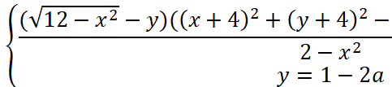
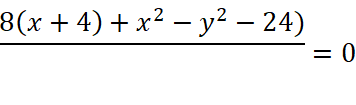
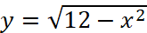
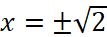
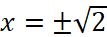
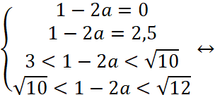
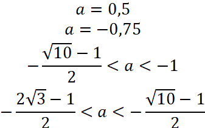
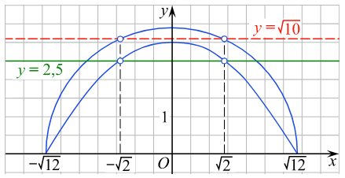

Задание:
Система  имеет два решения, найти а.
Первое уравнение из данной в задании системы эквивалентно следующей системе:
График первого уравнения из данной в задании системы – это графики функций:
 (полуокружность)
 (участок параболы с выколотыми точками )
(участок параболы с выколотыми точками )
График первого уравнения из данной в задании системы – прямая, зависящая от параметра а. Прямая горизонтальная.
Случаи, в которых у данной системы два решения, это случаи, когда у графиков две общие точки.
Найдём значения у:
 

В итоге получается следующее: